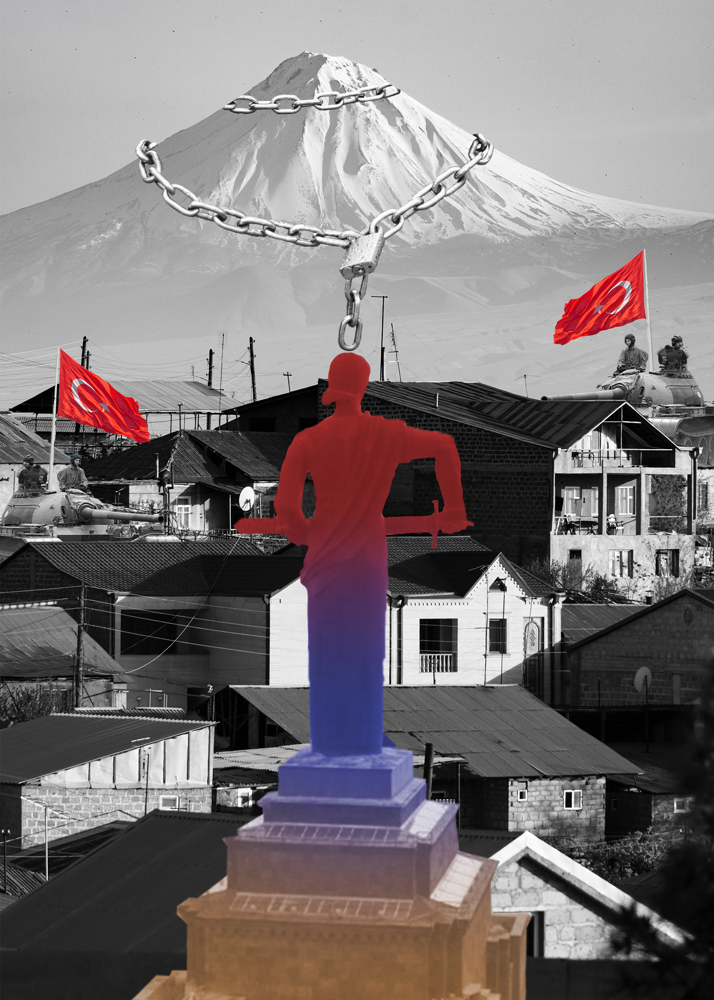

For this photomontage I tried to explore concepts of war and cultural genocide in relation to Armenia, my home country. For some historical context: Armenia and its bordering country Turkey have clashed for hundreds of years, most notably in 1915 when Turkey committed the Armenian Genocide, killing over 1.5 million people. Less than ten years later, Turkey would sign a peace treaty with Soviet-era Russia, in which Russia gave them ownership of Mount Ararat, the mountain shown in the photomontage. This was an extreme insult to injury since Ararat historically had always been Armenia’s territory, was/still is our national symbol, and most sacred landmark for thousands of years. But, being part of the USSR and under Russia’s control, Armenians had no choice but to watch ancient history be seized by their genocidal neighbor.
Being so close across the border and easily visible throughout most of the country, Ararat serves as a painful reminder to Armenians of how our history and culture have been violated. The Turkish government has continuously denied committing genocide, yet they also have made threats to finish what was started in 1915, claiming that even the capital of Armenia, Yerevan, will be theirs. Overlooking Yerevan in Victory Park is a 51 meter tall statue named “Mother Armenia”. With her stoic expression, sword in hand, and shield at her feet, she looks like the capital’s guardian. She represents the peoples’ strength, especially that of the women who took up arms throughout history to defend Armenian land and people. In this photomontage, representing the Armenian people, she stands as the only line of defense against advancing Turkish troops. For this photomontage I utilized layer masking, adjusting hue/saturation through non-destructive layers, clipping masks, and blending modes. I sourced my images through Unsplash.
home.